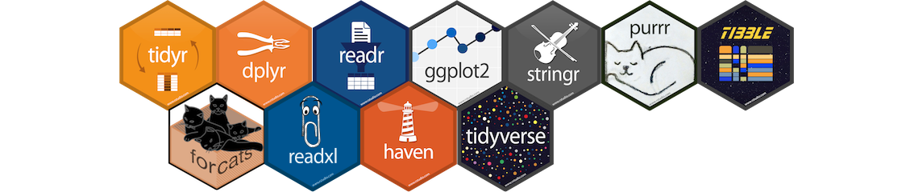
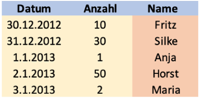
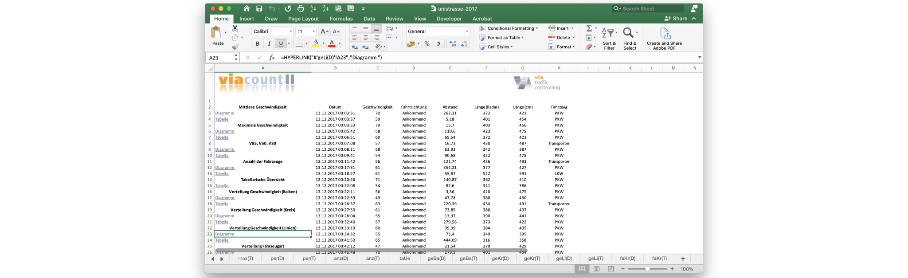
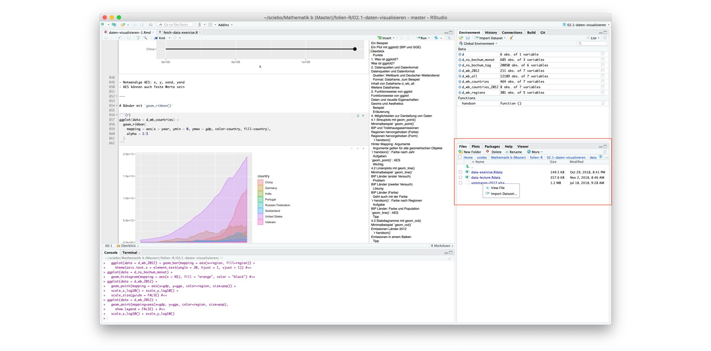
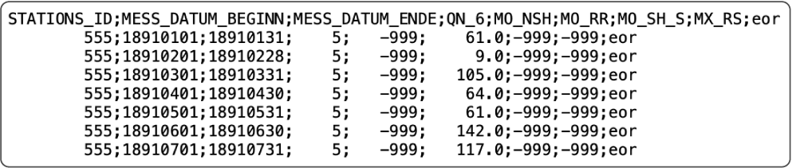

library(readxl)16 Daten einlesen
17 Tidyverse
17.1 Tidyverse

- Sammlung von Bibliotheken für Data-Science in R
- Durchgängige Designphilosophie und Datenstrukturen
- Viele Dinge leichter und eleganter zu erledigen als in ‘reinem’ R
- Ursprünglich von Hadley Wickham, heute viele Entwickler
- Einführung vom Autor auf Youtube (englisch)
18 Excel-Dateien lesen
18.1 Funktion read_excel(...)
Paket laden
Tabelle einlesen
d <- read_excel(Dateiname, Parameter...)Die wichtigsten Parameter
| Parameter | Bedeutung | Optional |
|---|---|---|
| skip = 5 | Anzahl zeilen, die überlesen werden sollten | Ja |
| range = “B2:G5” | Einzulesender Bereich (ersetzt skip) |
Ja |
| sheet = “Name” | Tabellenblatt, das gelesen werden soll | Ja |
18.2 Beispiel 1: Einfache Tabelle
d <- read_excel("daten/tabelle.xlsx")
kable(d)
| Datum | Anzahl | Name |
|---|---|---|
| 2012-12-30 | 10 | Fritz |
| 2012-12-31 | 30 | Silke |
| 2013-01-01 | 1 | Anja |
| 2013-01-02 | 50 | Horst |
| 2013-01-03 | 2 | Maria |
read_excel(...)liest Excel-Datei und gibt Dataframe zurück- Im einfachsten Fall nur Datei angeben, Inhalt von erstem Sheet
- Datum wird manchmal korrekt als date-time eingelesen
18.3 Leider nicht immer so einfach

Wo liegt das Problem?
- Es soll bestimmtes Tabellenblatt gelesen werden
- Bereiche links und oben sollen ignoriert werden
→ Importassistent!
18.4 Importassistent 1/3

18.5 Importassistent 2/3

18.6 Importassistent 3/3
d<-read_excel("daten/unistrasse-2017.xlsx",sheet="raw(T)",range="B2:H20712")
d# A tibble: 20,710 × 7
Datum Geschwindigkeit Fahrtrichtung Abstand `Länge (Radar)` `Länge (cm)`
<chr> <dbl> <chr> <dbl> <dbl> <dbl>
1 13.12.201… 70 Ankommend 262. 372 421
2 13.12.201… 59 Ankommend 5.18 401 454
3 13.12.201… 79 Ankommend 15.7 403 456
4 13.12.201… 58 Ankommend 111. 423 479
5 13.12.201… 60 Ankommend 69.5 372 421
6 13.12.201… 57 Ankommend 16.7 430 487
7 13.12.201… 58 Ankommend 63.9 342 387
8 13.12.201… 54 Ankommend 90.7 422 478
9 13.12.201… 56 Ankommend 122. 436 493
10 13.12.201… 61 Ankommend 354. 377 427
# ℹ 20,700 more rows
# ℹ 1 more variable: Fahrzeug <chr>- Einstellung in Excel unvollständig, daher Datum nicht richtig gelesen
- Anmerkung: Große Dataframes nicht mit
kableausgeben
19 CSV-Dateien einlesen
19.1 Aufbau und Inhalt von CSV-Dateien

- csv = Comma Separated Values, weit verbreitet, nicht standardisiert
- Häufig Kopfzeile(n) mit Beschreibung des Inhalts
- Inhalt in der Regel mit
- Datenfeldern getrennt z.B. durch Komma, Semikolon, Leerzeichen…
- Datum in verschiedensten Formaten
- Zahlen mit oder ohne Dezimaltrenner (Punkt oder Komma)
- Spezielle Kennzeichnung von fehlenden Werten
19.2 Amerikanische Konvention
Datei beispiel-1.csv
A, B, C, D
1.2, 3, Frances, 2020-12-01
2.6, 1, Howard, 2020-12-01
1.7, 6, Kimberley, 2020-12-01
500000.2, 3, Stacey, 2020-12-01
- Einträge durch “
,” getrennt, Dezimaltrenner ist “.” - Datum mit Jahr/Monat/Tag
Einlesen mit read_csv(...)
read_csv("daten/beispiel-1.csv")# A tibble: 4 × 4
A B C D
<dbl> <dbl> <chr> <date>
1 1.2 3 Frances 2020-12-01
2 2.6 1 Howard 2020-12-01
3 1.7 6 Kimberley 2020-12-01
4 500000. 3 Stacey 2020-12-01- Datum wird erkannt
19.3 Deutsche Konvention
Datei beispiel-2.csv
A; B; C; D
1,2; 3; Franziska; 01-10-2022
2,6; 1; Philipp; 03-12-2002
1,7; 6; Angela; 29-01-1977
500.000,2; 3; Sabine; 07-01-1898
- Einträge durch “
;” getrennt, Dezimaltrenner ist “,”, Tausender mit “.” - Datum mit Tag/Monat/Jahr
Einlesen mit read_csv2(...)
read_csv2("daten/beispiel-2.csv")# A tibble: 4 × 4
A B C D
<dbl> <dbl> <chr> <chr>
1 1.2 3 Franziska 01-10-2022
2 2.6 1 Philipp 03-12-2002
3 1.7 6 Angela 29-01-1977
4 500000. 3 Sabine 07-01-1898- Datum wird nicht erkannt
19.4 Gemischte Konvention
Datei beispiel-3.csv
A; B; C; D
1.2; 3; Franziska; 01-10-2022
2.6; 1; Philipp; 03-12-2002
1.7; 6; Angela; 29-01-1977
500,000.2; 3; Sabine; 07-01-1898
- Einträge durch “
;” getrennt, Dezimaltrenner ist “.”, Tausender mit “,” - Datum mit Tag/Monat/Jahr
Einlesen mit read_delim(...),
read_delim("daten/beispiel-3.csv", delim=";", trim_ws=TRUE, locale=locale(decimal_mark=".", grouping_mark=","))# A tibble: 4 × 4
A B C D
<dbl> <dbl> <chr> <chr>
1 1.2 3 Franziska 01-10-2022
2 2.6 1 Philipp 03-12-2002
3 1.7 6 Angela 29-01-1977
4 500000. 3 Sabine 07-01-1898delimwie delimiter = Trennzeichenlocaleenthält länderspezifische Einstellungentrim_wswie trim whitespace = entfernt Leerzeichen (wichtig!)- Datum wird nicht erkannt
19.5 Kodierung
Datei beispiel-4.csv
A; B; C; D
1,2; 3; J�rg; 01-10-2022
2,6; 1; Clau�; 03-12-2002
1,7; 6; �ngela; 29-01-1977
500.000,2; 3; J�rgen; 07-01-1898
- Datei ist ISO-8859-1 kodiert, Grundeinstellung in R ist UTF-8
Einlesen mit read_csv2(...)
read_csv2("daten/beispiel-4.csv", locale=locale(encoding="iso-8859-1"))# A tibble: 4 × 4
A B C D
<dbl> <dbl> <chr> <chr>
1 1.2 3 Jörg 01-10-2022
2 2.6 1 Clauß 03-12-2002
3 1.7 6 Ängela 29-01-1977
4 500000. 3 Jürgen 07-01-1898- Kodierung beim Einlesen explizit angeben
19.6 Beispiel: Niederschlagsdaten Bochum
read_delim(
"daten/produkt_nieder_monat_18910101_20171231_00555.txt",
delim = ";", trim_ws=TRUE,
locale = locale(decimal_mark = ".", grouping_mark = ",")
)# A tibble: 1,144 × 9
STATIONS_ID MESS_DATUM_BEGINN MESS_DATUM_ENDE QN_6 MO_NSH MO_RR MO_SH_S
<dbl> <dbl> <dbl> <dbl> <dbl> <dbl> <dbl>
1 555 18910101 18910131 5 -999 61 -999
2 555 18910201 18910228 5 -999 9 -999
3 555 18910301 18910331 5 -999 105 -999
4 555 18910401 18910430 5 -999 64 -999
5 555 18910501 18910531 5 -999 61 -999
6 555 18910601 18910630 5 -999 142 -999
7 555 18910701 18910731 5 -999 117 -999
8 555 18910801 18910831 5 -999 54 -999
9 555 18910901 18910930 5 -999 20 -999
10 555 18911001 18911031 5 -999 38 -999
# ℹ 1,134 more rows
# ℹ 2 more variables: MX_RS <dbl>, eor <chr>19.7 CSV-Dateien Zusammenfassung
read_csv(Dateiname, Parameter...) # Amerikanische Konvention
read_csv2(Dateiname, Parameter...) # Deutsche Konvention
read_delim(Dateiname, locale=locale(decimal_mark=".", grouping_mark=","), Parameter...)
Die wichtigsten Parameter
| Parameter | Bedeutung | Optional |
|---|---|---|
| skip = 5 | Anzahl zeilen, die überlesen werden sollten | Ja |
| trim_ws = TRUE | Leerzeichen entfernen (für read_delim) |
Ja |
| show_col_types = FALSE | Ausgabe unterdrücken | Ja |
20 Rohdaten
20.1 Hände weg von den Rohdaten!
Rohdaten dürfen nicht verändert werden
- ‘Von Hand’ durchgeführte Änderungen sind später nicht mehr nachvollziehbar
- Änderungen nur schwer einzeln rückgängig zu machen
Stattdessen: Rohdaten einlesen und in R aufbereiten
- R-Code dokumentiert was verändert wurde
- Wird bei der Benotung berücksichtigt
20.2 Beim Einlesen von Daten gilt immer
- Vorsicht: Eingelesene Daten sehr sorgfältig anschauen!
- Überblick verschaffen mit
summary(d)und/oderstr(d)